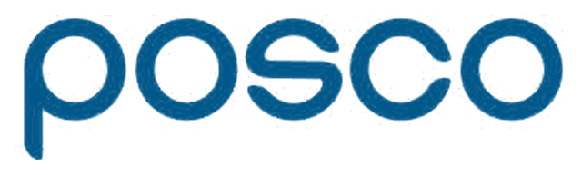

| 유형 | 제품 1 · 2,950샷 | 제품 2 · 2,324샷 |
|---|---|---|
| Normal정상 | 2,429 | 1,663 |
| Short_Shot미충전 | 161 | 308 |
| Blow_Hole기공 | 0 | 233 |
| Exfoliation박리 | 198 | 0 |
| Deformation변형 | 106 | 0 |
| Stain얼룩 | 2 | 98 |
| 기타불량기타 | 54 | 22 |
| 무작위로 나눔 | 처음 보는 시기 | |
|---|---|---|
| 불량 탐지율 재현율 실제 불량 중 잡은 것 | 1,182건 중 600 | 231건 중 45 |
| 경보 적중률 정밀도 경보 중 실제 불량 | 720건 중 600 | 200건 중 45 |
| 모델 | 불량 1,182건 중 잡음 | 정상 4,092건 중 헛경보 |
|---|---|---|
| KNN | 600 (50.8%) | 120 |
| RandomForest | 598 (50.6%) | 124 |
| 로지스틱 (가중치) | 1,128 (95.4%) | 3,147 |
| 로지스틱 | 5 (0.4%) | 10 |